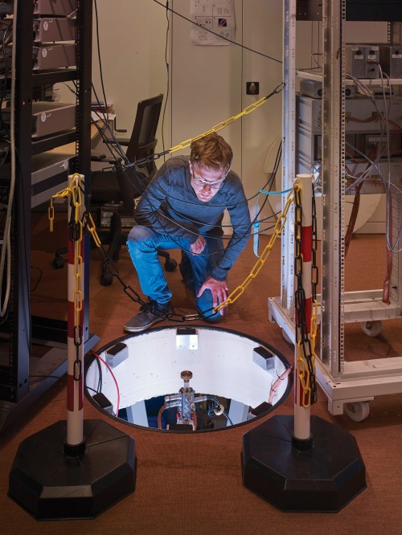
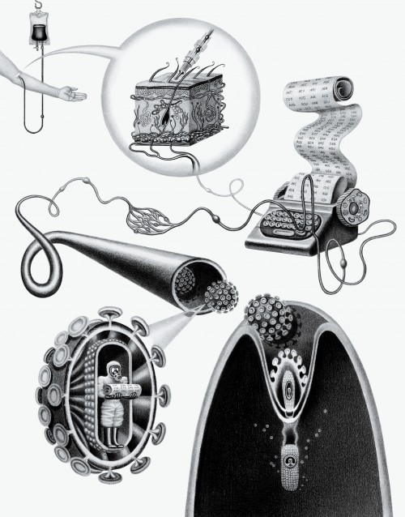
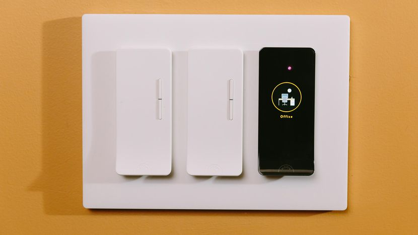
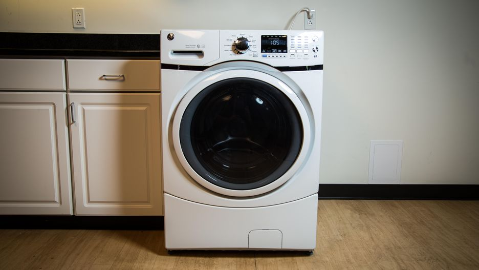

Welcome to the future! We present a speculative timeline of future history. Part fact and part fiction,
the timeline is based on detailed research – including analysis of current trends, long-term environmental
impacts, advances in technology such as Moore's Law, future medicine, geopolitical changes and much
more. Where possible, references are provided to support the predictions. FutureTimeline is a
collaborative, ongoing project – we welcome ideas from scientists, futurists, inventors, writers and
anyone else who is interested in futurology.
Future Timeline
21st Century
An increasingly globalised humanity is faced with climate change, dwindling resources,
overpopulation and technological upheaval.
Read more...
22nd Century
Diverging paths for humans and transhumans, eco-technic societies dominate the globe,
colonisation of space accelerates.
Read more...
The Far Future
Post-biological humanity begins to spread throughout the Galaxy, transforming dead worlds into \
computational substrates.
Read more...
Beyond...
A future timeline of the Universe and its ultimate fate.
Read more...
Latest
1. Paying with Your Face
Face-detecting systems in China now authorize payments, provide access to facilities, and track down criminals.
Will other countries follow?
2. Self-Driving Trucks
Tractor-trailers without a human at the wheel will soon barrel onto highways near you. What will this mean for the nation’s
1.7 million truck drivers?
3. The 360-Degree selfie
Inexpensive cameras that make spherical images are opening a new era in photography and changing the way people share
stories.

4. Practical Quantum Computers
Advances at Google, Intel, and several research groups indicate that computers with previously unimaginable power are
finally within reach.

5. Gene Therapy 2.0
Scientists have solved fundamental problems that were holding back cures for rare hereditary disorders. Next we’ll see if
the same approach can take on cancer, heart disease, and other common illnesses.
Popular
1. 2018 Porsche 911 Carrera GTS
The 3.0-liter inline six-cylinder engine in the 911 Carrera GTS gets bigger turbos for more boost compared to the
Carrera S.

2. Noon Smart Lighting Starter Kit
Smart light system that uses your regular bulbs
3. Acer Swift 7
New for CES 2018, Acer says the 8.98mm Swift 7 is the thinnest laptop in the world.

4. GE GFW450SSKWW
GE's washer cleans fine, has most of the features you want
5. Crock Pot Express
Crock-Pot's new multicooker brings the heat to Instant Pot
The Arc reactor
ARC is a conceptual point design of a fusion nuclear science facility/Pilot power plant that demonstrates the advantages
of a compact, high-?eld design utilizing REBCO superconducting magnets and inboard launched lower hybrid current drive (LHCD).
The a?ordable, robust, compact (ARC) reactor is the product of a conceptual design study aimed at reducing the size, cost, and
complexity of a combined fusion nuclear science facility(FNSF) and demonstration fusion Pilot power plant. ARC is a~200-250 MWe tokamak reactor with
a major radius of 3.3 m, a minor radius of 1.1 m, and an on-axis magnetic ?eld of 9.2 T.
ARC makes useofhigh-temperaturesuperconductors(HTS),whichenables large on-axis magnetic ?elds and ultimately reduces the size of the reactor.
A starting design philosophy of ARC is that failure should and will occur as various fusion materials and power exhaust technologies are tried
and tested. However, because they can be readily ?xed, these failures should not compromise the overall capacity of the device to produce fusing
plasmas.
The ARC reactor is a conceptual tokamak design that can function as both a demonstration fusion power plant for energy generation and a fusion
nuclear science facility (FNSF) for integrated materials and component irradiation testing in a D-T neutron ?eld.
The starting objective of the ARC study was to determine if a reduced size D-T fusion device (fusion power= 500MW)could bene?t from the high magnetic
?eld technology o?ered by recently developed high temperature superconductors. The reasoning was tha ta high magnitude magnetic ?eld in a compact,
superconducting device might o?er not only access to high plasma gain Qp,but also enable net electric gain Qe > 1. This speci?c option has not been explored
previously in design studies, although the recent advanced tokamak (AT) Pilot (Qe=1) study of Menard et al. [9] had similar design goals, but used conventional
superconductor technology. A recent FNSF study is the FDF design [10], which is a similar size to ARC, but consumes > 500 MW of electricity because it does not
use superconducting magnets.